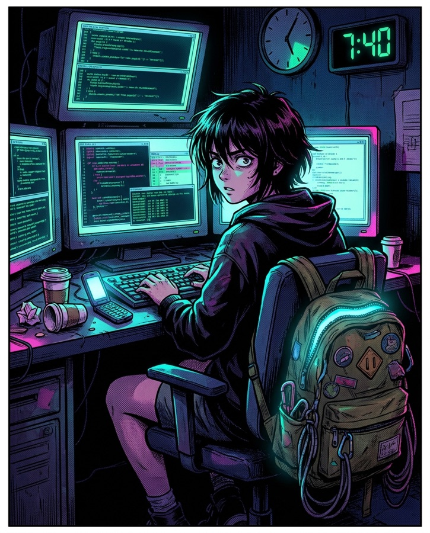
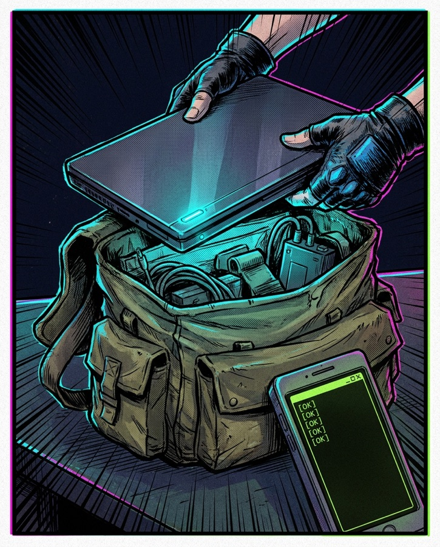
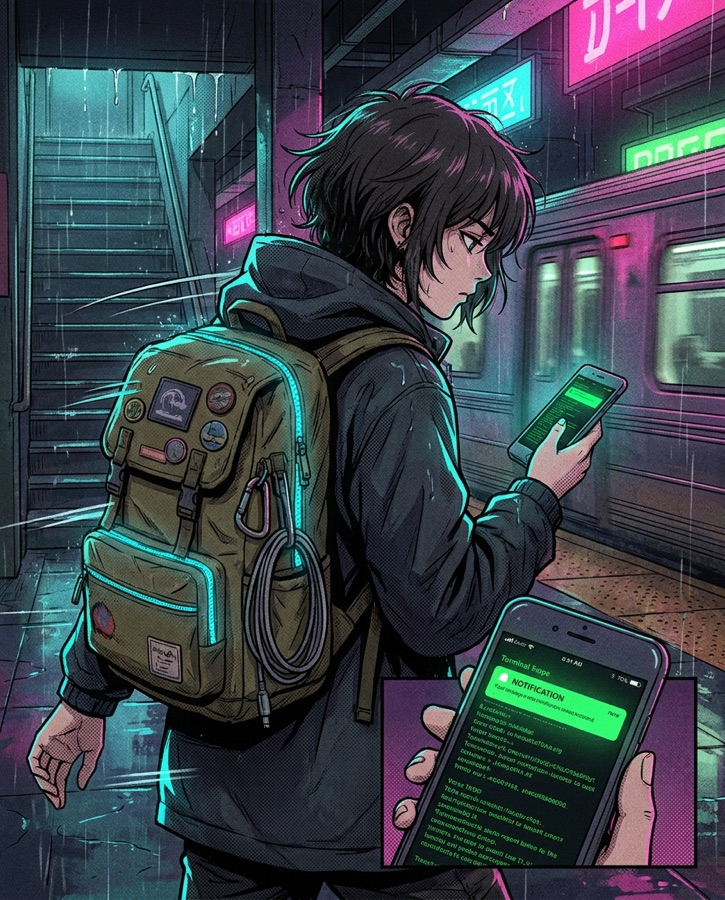
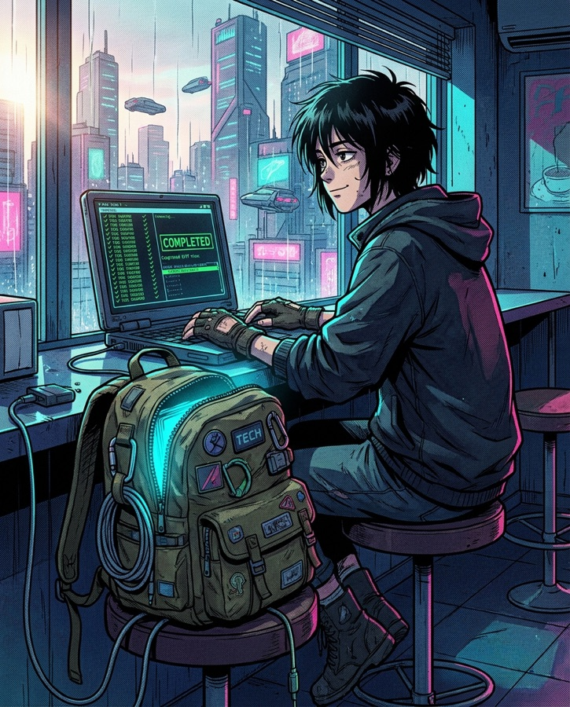
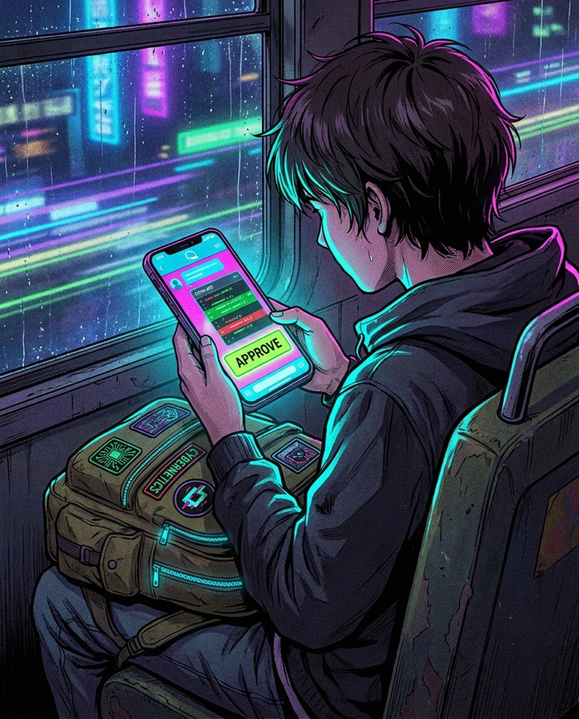

▸ STEER
Keep driving the run from the Codex app or claude.ai on your phone — review diffs, approve tools, redirect the agent mid-transit. Outbound-only: the Mac never needs inbound access.
// open source · macOS · for agent runners
Your coding agents keep working — lid closed, in the bag, on your phone's hotspot — while you keep steering from the Codex or Claude app in your hand. Rucksack runs every check before you walk out the door, then watches the link while you move and pings your phone if anything breaks.
curl -fsSL https://rucksack.sh/install | bash
// mission log
Every trip is the same four panels. Rucksack makes sure they end well.


rucksack pack --lid-closed --yes --watch — every check green. Zip it.


// the phone is the cockpit
The Mac in the bag is the compute node. The phone in your hand runs the show.

▸ STEER
Keep driving the run from the Codex app or claude.ai on your phone — review diffs, approve tools, redirect the agent mid-transit. Outbound-only: the Mac never needs inbound access.
▸ WATCH
The watchdog posts to your private ntfy.sh topic — link lost, link restored, process revived. Subscribe on your phone and know within seconds.
▸ REACH
Want a real terminal into the bag? Optional Tailscale plus any ssh client gives you a shell from anywhere. Strictly optional — steering and alerts work without it.
// gear check
A transparent CLI. No daemon squatting on your Mac — everything is a command you can read.
$ rucksack doctor
Nine readiness checks: battery, hotspot SSID, real internet (captive-portal probe), Tailscale if you have it, your agent remotes.
$ rucksack pack --lid-closed --yes
Backpack mode. sudo pmset disablesleep with the previous value saved, verified, and restored on stop. The bag run, done properly.
$ rucksack pack --watch
A watchdog rides along: rejoins the hotspot when Wi-Fi drops, restarts the keep-awake process if it dies, logs everything.
$ rucksack notify test
Point --notify-url at an ntfy.sh topic. Link lost, link restored, process revived — your phone knows in seconds.
$ rucksack hotspot connect "My iPhone"
Joins your phone's hotspot from the Keychain-saved password and verifies the association — even when macOS redacts the SSID.
$ rucksack unpack
Kills the watchdog, stops keep-awake, restores your exact previous sleep settings, cleans up state. No trace left behind.
// one line
macOS · Node 20+ · MIT licensed · no runtime dependencies
$ curl -fsSL https://rucksack.sh/install | bash
$ # prefer to read it first? same script, no pipe:
$ curl -fsSL https://rucksack.sh/install -o install.sh && less install.sh
// no lies on this page
caffeinate alone can't survive a lid close — that's physics of macOS, not marketing. Rucksack uses sudo pmset and restores your exact previous setting.